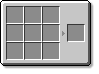

By Linaru Greyfall
Necromantia was created by Linaru, and is being developed with the assistance of nekosune. It is used for a multitude of purposes, primarily for making basic to advanced Potions. Other parts of Necromantia include new mobs, inventory extensions, and new decorative blocks and items.
The eventual plan for Necromantia is to overhaul vanillas combat system and balance the games mobs to better match up against the power of equipment and items found in common mods.
The current mod version is Carrot.1.0.98
Other version can be found here but most of these are not stable
Recipes

This work is licensed under the Creative Commons Attribution-NonCommercial-ShareAlike 4.0 International License. To view a copy of this license, visit http://creativecommons.org/licenses/by-nc-sa/4.0/.